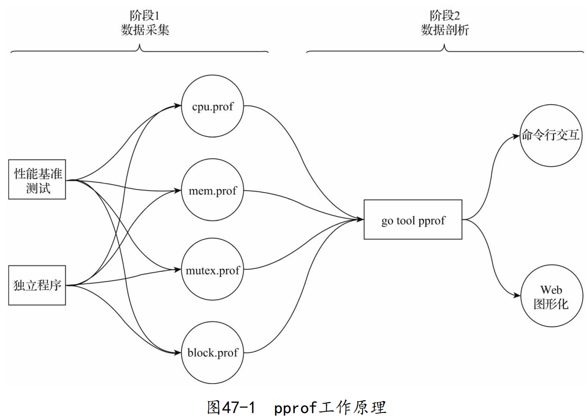

Go还内置了对代码进行性能剖析的工具：pprof。pprof源自Google Perf Tools工具套件，在Go发布早期就被集成到Go工具链中了，并且Go运行时原生支持输出满足pprof需要的性能采样数据。
1. pprof的工作原理
使用pprof对程序进行性能剖析的工作一般分为两个阶段：数据采集 和 数据剖析 ，如下图所示：

1.1. 采样数据类型
在数据采集阶段，Go运行时会定期对剖析阶段所需的不同类型数据进行采样记录。当前主要支持的采样数据类型有以下几种：
CPU数据（cpu.prof）：一旦启用CPU数据采样，Go运行时会每隔一段短暂的时间（10ms）就中断一次，并记录当前所有goroutine的函数栈信息（存入 cpu.prof）。堆内存分配数据（mem.prof）：它能帮助我们了解Go程序的当前和历史内存使用情况。堆内存分配的采样频率可配置，默认每1000次堆内存分配会做一 次采样（存入mem.prof）。锁竞争数据（mutex.prof）：锁竞争采样数据记录了当前Go程序中互斥锁争用导致延迟的操作。该类型采样数据在默认情况下是不启用的，请参见 runtime.SetMutexProfileFraction或go test -bench . xxx_test.go -mutexprofile mutex.out启用它。阻塞时间数据（block.prof）：该类型采样数据记录的是goroutine在某共享资源（一般是由同步原语保护）上的阻塞时间，包括从无缓冲channel收发数据、阻塞在一个已经被其他goroutine锁住的互斥锁、向一个满了的channel发送数据或从一个空的channel接收数据等。该类型采样数据在默认情况下也是不启用的，请参见runtime.SetBlockProfileRate或go test -bench . xxx_test.go - blockprofile block.out启用它。
采样不是免费的，因此一次采样尽量仅采集一种类型的数据，不要同时采样多种类型的数据，避免相互干扰采样结果。
1.2. 性能数据采集的方式
- 通过性能基准测试进行数据采集
为应用中的关键函数/方法建立起性能基准测试之后，我们便可以通过执行性能基准测试采集到整个测试执行过程中有关被测方法的各类性能数据。这种方式尤其适用于对应用中关键路径上关键函数/方法性能的剖析。
$go test -bench . xxx_test.go -cpuprofile=cpu.prof
$go test -bench . xxx_test.go -memprofile=mem.prof
$go test -bench . xxx_test.go -blockprofile=block.prof
$go test -bench . xxx_test.go -mutexprofile=mutex.prof
独立程序的性能数据采集
可以通过标准库runtime/pprof和runtime包提供的低级API对独立程序进行性能数据采集。
但是这种独立程序的性能数据采集方式对业务代码侵入较多，还要自己编写一些采集逻辑：定义flag变量、创建输出文件、关闭输出文件等。每次采集都要停止程序才能获取结果。（当然可 以重新定义更复杂的控制采集时间窗口的逻辑，实现不停止程序也能获 取采集数据结果。）
- Go在net/http/pprof包中还提供了一种更为高级的针对独立程序的性能数据采集方式，这种方式尤其适合那些内置了HTTP服务的独立程序。
1.3. 性能数据的剖析
Go工具链通过pprof子命令提供了两种性能数据剖析方法：命令行交互式和Web图形化。命令行交互式的剖析方法更常用，也是基本的性能数据剖析方法；而基于Web图形化的剖析方法在剖析结果展示上更为直观。
- 命令行交互方式
- Web图形化方式
2. 使用pprof进行性能剖析的实例
（略）